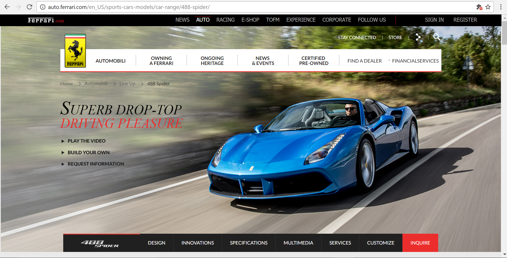

Alignment
What is alignment?
Alignment is arrangement in a straight line or in correct relative positions. So you make the text and graphics line up.
Example
Benefits of Good Alignment
- Proper design ,make the web more appealing
- It is easy for user to scan over a page
- Help the user to have easier reading experience
- User does not get confused

Types of Text Alignment
- Left
- Right
- Center
- Justified
Example

Centering
- Should be in moderation
- Is great for header in web design
- Works better with small portion of text
Right Text Alignment Rules
- We use only with small amount of text and try to keep the design balanced
- We use only with small amount of text and try to keep the design balanced
General Rules of Text Alignment
- Align to the left
- Unless you are designing in a language that is read from right to left , e.g. Arabic then you align text in the right
How Do Best Align Websites look Like ?
